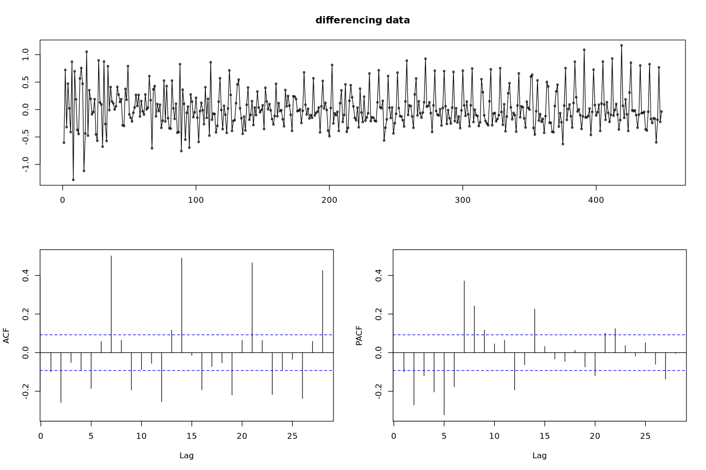
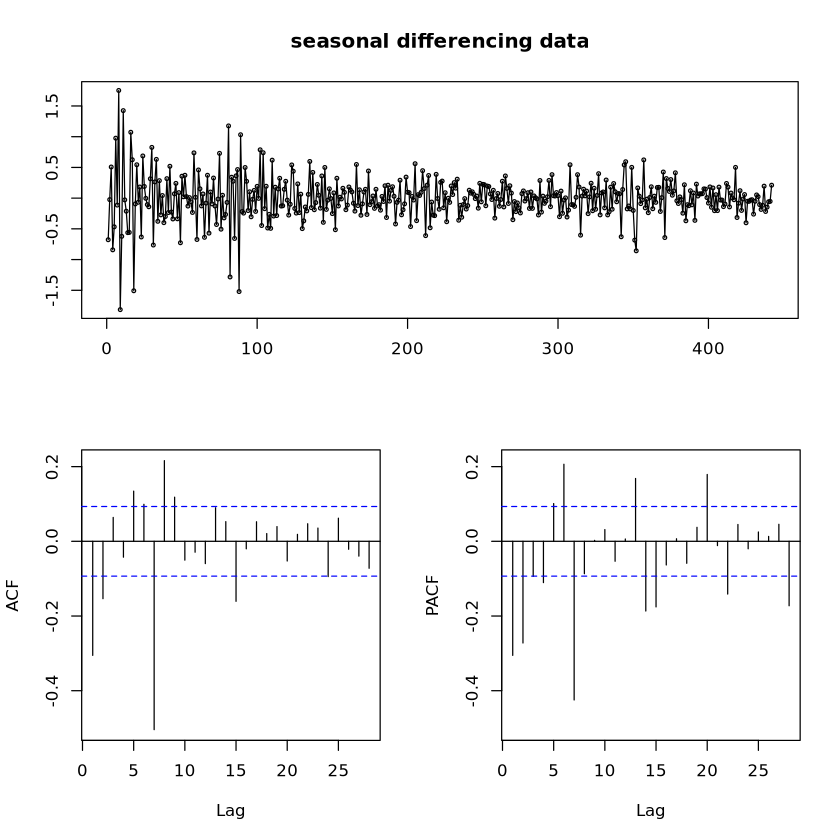
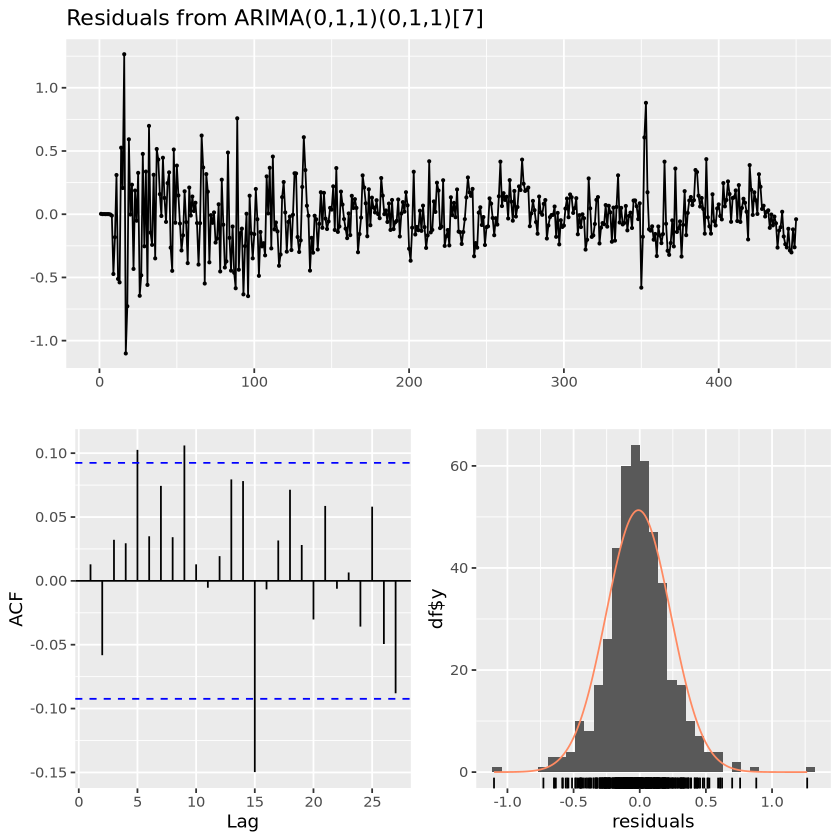
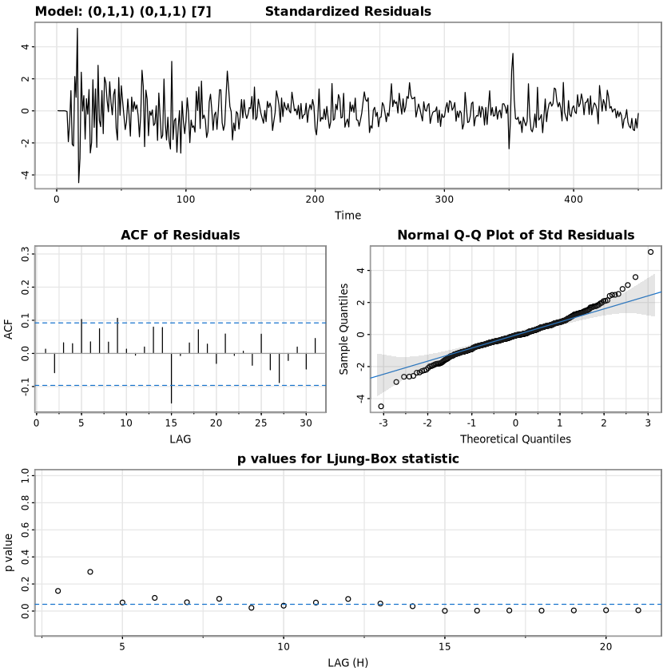
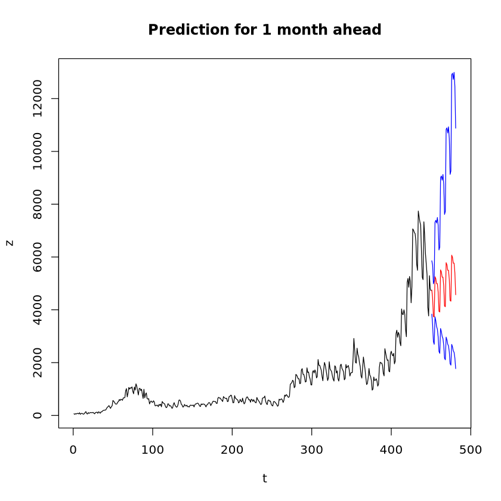

options(repr.plot.width = 12, repr.plot.height = 8)
data = read.csv("COVID.csv")
z = data$n;head(z)- 62
- 41
- 67
- 54
- 74
- 75
시도표 상 이분산성이 보임. 또한 ACF 그림을 보아 비정상성 시계열 및 주기가 7인 계절성분이 보이는 것 같음.
주기가 7인 이유: 같은 주 기준 평일 월, 화에 높고 금,토,일 주말에는 낮은 경향을 보였음.
따라서 분산 안정화, 차분, 계절 차분할 예정.
# 단위근검정 H0 : phi=1
fUnitRoots::adfTest(boxcox_z, lags = 1, type = "ct")
fUnitRoots::adfTest(boxcox_z, lags = 2, type = "ct")
Title:
Augmented Dickey-Fuller Test
Test Results:
PARAMETER:
Lag Order: 1
STATISTIC:
Dickey-Fuller: -3.8528
P VALUE:
0.01646
Description:
Tue Dec 5 15:03:31 2023 by user:
Title:
Augmented Dickey-Fuller Test
Test Results:
PARAMETER:
Lag Order: 2
STATISTIC:
Dickey-Fuller: -2.8881
P VALUE:
0.2023
Description:
Tue Dec 5 15:03:31 2023 by user: d_boxcox_z = diff(boxcox_z)
forecast::tsdisplay(d_boxcox_z, lag.max = 28, main = "differencing data")
ds_d_boxcox_z = diff(d_boxcox_z, 7)
forecast::tsdisplay(ds_d_boxcox_z, lag.max = 28, main = "seasonal differencing data")
fit1 = arima(ds_d_boxcox_z, order = c(0,0,2),
seasonal = list(order = c(0,0,1), period=7))
summary(fit1)
Call:
arima(x = ds_d_boxcox_z, order = c(0, 0, 2), seasonal = list(order = c(0, 0,
1), period = 7))
Coefficients:
ma1 ma2 sma1 intercept
-0.3563 -0.0323 -0.8962 -5e-04
s.e. 0.0500 0.0473 0.0269 9e-04
sigma^2 estimated as 0.0602: log likelihood = -11.92, aic = 33.83
Training set error measures:
ME RMSE MAE MPE MAPE MASE
Training set -0.003851825 0.2453618 0.1814767 96.82079 199.3321 0.471839
ACF1
Training set -0.000908014
z test of coefficients:
Estimate Std. Error z value Pr(>|z|)
ma1 -0.35630807 0.05001644 -7.1238 1.05e-12 ***
ma2 -0.03227634 0.04725799 -0.6830 0.4946
sma1 -0.89616899 0.02694401 -33.2604 < 2.2e-16 ***
intercept -0.00050138 0.00087797 -0.5711 0.5680
---
Signif. codes: 0 ‘***’ 0.001 ‘**’ 0.01 ‘*’ 0.05 ‘.’ 0.1 ‘ ’ 1
Call:
arima(x = boxcox_z, order = c(0, 1, 1), seasonal = list(order = c(0, 1, 1),
period = 7))
Coefficients:
ma1 sma1
-0.3735 -0.8947
s.e. 0.0436 0.0269
sigma^2 estimated as 0.06032: log likelihood = -12.31, aic = 30.62
Training set error measures:
ME RMSE MAE MPE MAPE MASE
Training set -0.009955862 0.2434152 0.1783768 -0.1744986 2.103107 0.6845257
ACF1
Training set 0.01293079
Ljung-Box test
data: Residuals from ARIMA(0,1,1)(0,1,1)[7]
Q* = 16.188, df = 8, p-value = 0.03976
Model df: 2. Total lags used: 10

One Sample t-test
data: resid(fit2)
t = -0.8674, df = 449, p-value = 0.3862
alternative hypothesis: true mean is not equal to 0
95 percent confidence interval:
-0.03251286 0.01260113
sample estimates:
mean of x
-0.009955862 Box.test(resid(fit2), lag=1, type = "Ljung-Box")
Box.test(resid(fit2), lag=6, type = "Ljung-Box")
Box.test(resid(fit2), lag=12, type = "Ljung-Box")
Box-Ljung test
data: resid(fit2)
X-squared = 0.075745, df = 1, p-value = 0.7831
Box-Ljung test
data: resid(fit2)
X-squared = 7.8473, df = 6, p-value = 0.2495
Box-Ljung test
data: resid(fit2)
X-squared = 16.376, df = 12, p-value = 0.1746initial value -1.061301
iter 2 value -1.311697
iter 3 value -1.330154
iter 4 value -1.338688
iter 5 value -1.344267
iter 6 value -1.345799
iter 7 value -1.345936
iter 8 value -1.346035
iter 9 value -1.346035
iter 9 value -1.346035
iter 9 value -1.346035
final value -1.346035
converged
initial value -1.371426
iter 2 value -1.391006
iter 3 value -1.391074
iter 4 value -1.391081
iter 5 value -1.391086
iter 6 value -1.391087
iter 6 value -1.391087
final value -1.391087
converged$fit
Call:
arima(x = xdata, order = c(p, d, q), seasonal = list(order = c(P, D, Q), period = S),
include.mean = !no.constant, transform.pars = trans, fixed = fixed, optim.control = list(trace = trc,
REPORT = 1, reltol = tol))
Coefficients:
ma1 sma1
-0.3735 -0.8947
s.e. 0.0436 0.0269
sigma^2 estimated as 0.06032: log likelihood = -12.31, aic = 30.62
$degrees_of_freedom
[1] 440
$ttable
Estimate SE t.value p.value
ma1 -0.3735 0.0436 -8.5592 0
sma1 -0.8947 0.0269 -33.3190 0
$AIC
[1] 0.06927794
$AICc
[1] 0.06933979
$BIC
[1] 0.09704701
fit3 = arima(boxcox_z, order = c(1,1,0),
seasonal = list(order = c(0,1,1), period=7))
summary(fit3)
lmtest::coeftest(fit3)
summary(fit3)$aic
summary(fit3)$sigma2
Call:
arima(x = boxcox_z, order = c(1, 1, 0), seasonal = list(order = c(0, 1, 1),
period = 7))
Coefficients:
ar1 sma1
-0.3002 -0.8918
s.e. 0.0457 0.0262
sigma^2 estimated as 0.06213: log likelihood = -18.73, aic = 43.46
Training set error measures:
ME RMSE MAE MPE MAPE MASE
Training set -0.008447679 0.2470426 0.1771224 -0.1556136 2.103485 0.6797119
ACF1
Training set -0.05502391
z test of coefficients:
Estimate Std. Error z value Pr(>|z|)
ar1 -0.300167 0.045672 -6.5723 4.955e-11 ***
sma1 -0.891807 0.026243 -33.9828 < 2.2e-16 ***
---
Signif. codes: 0 ‘***’ 0.001 ‘**’ 0.01 ‘*’ 0.05 ‘.’ 0.1 ‘ ’ 1fit4 = arima(boxcox_z, order = c(2,1,0),
seasonal = list(order = c(0,1,1), period=7))
summary(fit4)
lmtest::coeftest(fit4)
summary(fit4)$aic
summary(fit4)$sigma2
Call:
arima(x = boxcox_z, order = c(2, 1, 0), seasonal = list(order = c(0, 1, 1),
period = 7))
Coefficients:
ar1 ar2 sma1
-0.3526 -0.1881 -0.9008
s.e. 0.0469 0.0475 0.0260
sigma^2 estimated as 0.05991: log likelihood = -11.01, aic = 30.02
Training set error measures:
ME RMSE MAE MPE MAPE MASE
Training set -0.009928693 0.2425888 0.17824 -0.1738818 2.1011 0.6840005
ACF1
Training set -0.004152125
z test of coefficients:
Estimate Std. Error z value Pr(>|z|)
ar1 -0.352623 0.046869 -7.5236 5.329e-14 ***
ar2 -0.188129 0.047501 -3.9606 7.478e-05 ***
sma1 -0.900764 0.025962 -34.6959 < 2.2e-16 ***
---
Signif. codes: 0 ‘***’ 0.001 ‘**’ 0.01 ‘*’ 0.05 ‘.’ 0.1 ‘ ’ 1fit5 = arima(boxcox_z, order = c(0,1,1),
seasonal = list(order = c(0,1,2), period=7))
summary(fit5)
lmtest::coeftest(fit5)
summary(fit5)$aic
summary(fit5)$sigma2
Call:
arima(x = boxcox_z, order = c(0, 1, 1), seasonal = list(order = c(0, 1, 2),
period = 7))
Coefficients:
ma1 sma1 sma2
-0.3817 -0.8546 -0.0462
s.e. 0.0445 0.0489 0.0482
sigma^2 estimated as 0.06018: log likelihood = -11.85, aic = 31.7
Training set error measures:
ME RMSE MAE MPE MAPE MASE
Training set -0.01039578 0.243128 0.177735 -0.1806921 2.094994 0.6820624
ACF1
Training set 0.01583387
z test of coefficients:
Estimate Std. Error z value Pr(>|z|)
ma1 -0.381724 0.044519 -8.5745 <2e-16 ***
sma1 -0.854601 0.048855 -17.4926 <2e-16 ***
sma2 -0.046235 0.048168 -0.9599 0.3371
---
Signif. codes: 0 ‘***’ 0.001 ‘**’ 0.01 ‘*’ 0.05 ‘.’ 0.1 ‘ ’ 1fit6 = arima(boxcox_z, order = c(1,1,1),
seasonal = list(order = c(1,1,1), period=7))
summary(fit6)
lmtest::coeftest(fit6)
summary(fit6)$aic
summary(fit6)$sigma2
Call:
arima(x = boxcox_z, order = c(1, 1, 1), seasonal = list(order = c(1, 1, 1),
period = 7))
Coefficients:
ar1 ma1 sar1 sma1
0.0677 -0.4362 0.0600 -0.9088
s.e. 0.1010 0.0878 0.0562 0.0265
sigma^2 estimated as 0.0601: log likelihood = -11.59, aic = 33.18
Training set error measures:
ME RMSE MAE MPE MAPE MASE
Training set -0.01059982 0.2429618 0.1776908 -0.1828248 2.093254 0.6818928
ACF1
Training set 0.003942798
z test of coefficients:
Estimate Std. Error z value Pr(>|z|)
ar1 0.067739 0.100999 0.6707 0.5024
ma1 -0.436222 0.087826 -4.9669 6.805e-07 ***
sar1 0.060033 0.056197 1.0683 0.2854
sma1 -0.908787 0.026496 -34.2984 < 2.2e-16 ***
---
Signif. codes: 0 ‘***’ 0.001 ‘**’ 0.01 ‘*’ 0.05 ‘.’ 0.1 ‘ ’ 1fit7 = forecast::auto.arima(ts(boxcox_z, frequency=7),
test = "adf",
seasonal = TRUE, trace = F)
summary(fit7)
lmtest::coeftest(fit7)
summary(fit7)$aic
summary(fit7)$sigma2Series: ts(boxcox_z, frequency = 7)
ARIMA(2,0,2)(2,1,2)[7] with drift
Coefficients:
ar1 ar2 ma1 ma2 sar1 sar2 sma1 sma2 drift
0.2555 0.7227 0.3816 -0.3275 0.2010 0.0436 -1.0546 0.1210 0.0178
s.e. 0.3999 0.3942 0.3883 0.1190 0.6152 0.0713 0.6145 0.5625 0.0073
sigma^2 = 0.06043: log likelihood = -7.96
AIC=35.93 AICc=36.44 BIC=76.86
Training set error measures:
ME RMSE MAE MPE MAPE MASE
Training set -0.0006914901 0.2414096 0.17754 -0.04840449 2.089976 0.4767194
ACF1
Training set -0.008133506
z test of coefficients:
Estimate Std. Error z value Pr(>|z|)
ar1 0.2554734 0.3999393 0.6388 0.522966
ar2 0.7226721 0.3942309 1.8331 0.066785 .
ma1 0.3815957 0.3882700 0.9828 0.325701
ma2 -0.3274742 0.1190479 -2.7508 0.005945 **
sar1 0.2009889 0.6152236 0.3267 0.743901
sar2 0.0436016 0.0713448 0.6111 0.541107
sma1 -1.0546226 0.6144969 -1.7162 0.086119 .
sma2 0.1210424 0.5625448 0.2152 0.829635
drift 0.0177889 0.0073206 2.4300 0.015100 *
---
Signif. codes: 0 ‘***’ 0.001 ‘**’ 0.01 ‘*’ 0.05 ‘.’ 0.1 ‘ ’ 1fore_fit = forecast::forecast(fit2, 31)
forecast_z = forecast::InvBoxCox(fore_fit$mean, lambda=forecast::BoxCox.lambda(z))
forecast_z_upper95 = forecast::InvBoxCox(fore_fit$upper[,2], lambda=forecast::BoxCox.lambda(z))
forecast_z_lower95 = forecast::InvBoxCox(fore_fit$lower[,2], lambda=forecast::BoxCox.lambda(z))plot(1:(length(z)+31), c(z, forecast_z_upper95), type='n', xlab='t', ylab='z', main = "Prediction for 1 month ahead")
lines(1:length(z),z)
lines((length(z)+1) : (length(z)+31), forecast_z, col='red')
lines((length(z)+1) : (length(z)+31), forecast::InvBoxCox(fore_fit$lower[,2], lambda=forecast::BoxCox.lambda(z)), col='blue')
lines((length(z)+1) : (length(z)+31), forecast::InvBoxCox(fore_fit$upper[,2], lambda=forecast::BoxCox.lambda(z)), col='blue')